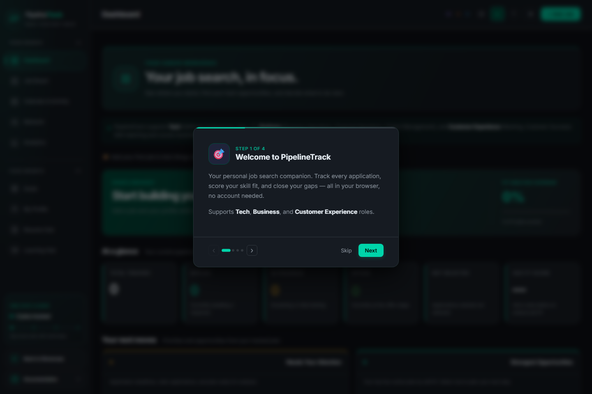

A connected workspace for the job search.
Applications, skills, resumes, and learning resources come together in one browser-based tool.
Personal project / Browser application

The problem
A job search spreads information across listings, notes, spreadsheets, and resume files. PipelineTrack brings that workflow into one workspace so an application can be considered alongside the skills it needs.
How it works
Separate JavaScript modules handle the board, profile, calendar, analytics, and resume views. Shared state connects those views, while localStorage persists jobs, profile data, contacts, and other records between visits.
A design tradeoff
Browser storage keeps the main workflow account-free and avoids requiring a server for saved application data. The tradeoff is that records stay with that browser rather than automatically syncing across devices. Backup export and import provide a way to move or preserve them.
Look inside the code
The state module includes save/load routines, data normalization, backup export/import, and handling for an import that cannot be saved because storage is full.
Read javascript/state.js ↗See it working.
- Open My Profile and add a few skills, such as JavaScript and SQL.
- Open Job Board, choose + Add Job, and create a fictional application with a description mentioning those skills.
- Open the job card to inspect the fit breakdown, then visit Analytics to see how the application appears in the wider pipeline.
What this demonstrates
This build demonstrates shared application state, browser persistence, and the interface work needed to connect several workflows.
Fit scores reflect the tool’s matching rules; they are a guide for exploring a listing, rather than a prediction of hiring outcomes.